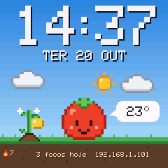

Foco na mesa.
Não no celular.
Um timer Pomodoro com um tomate em pixel art, 13 mostradores, clima e um painel no celular, rodando no seu SmallTV Ultra. Sem conta, sem nuvem e sem cabo para instalar.

- 13
- mostradores embutidos
- 41
- para instalar pela galeria
- 1 ano
- de focos guardados no relógio
- 3
- idiomas no painel e na tela
- 0
- contas, nuvens ou cabos
Um timer que você vê com o canto do olho
Um anel enche até o fim do foco, o horário de término fica na tela e o tomate acompanha: concentrado no trabalho, com café na pausa, cochilando quando você pausa e pulando quando a fase acaba.
Animação feita com o simulador do projeto, que compila o mesmo código de desenho do firmware. Um vídeo do relógio de verdade vem em breve.

O relógio que você já tem, pensado para focar
O timer é o centro
Foco, pausa curta e longa, meta do dia e a atividade que você está fazendo. O relógio guarda um ano de focos e uma planta cresce com a sua sequência, até o tomate dourado.
 Instala sem cabo
Instala sem cabo
Você envia o arquivo pela própria página de fábrica do relógio, como uma atualização comum. Algumas unidades pedem antes um carregador pequeno; o guia mostra como.
Atualizações conferidas
As versões novas chegam com um toque no painel, assinadas, e o relógio confere o arquivo inteiro antes de trocar. Se algo der errado, o modo de recuperação abre sem botão: é só ligar e desligar 3 vezes.
 Mostradores sem regravar
Mostradores sem regravar
13 mostradores embutidos e mais 41 na galeria, cada um num arquivo pequeno que o painel instala sem atualizar o firmware.
Veja de perto
As telas do relógio, geradas pelo simulador do projeto com o mesmo código do firmware.
Foco: o anel vermelho enche até o fim da fase, com a contagem regressiva e o horário de término. O tomate fica concentrado ao lado do objeto da atividade. (acelerado)
No painel você escolhe a atividade do foco, e o objeto dela aparece ao lado do tomate:



Mostradores novos para instalar
Além dos 13 embutidos, a galeria tem mostradores que não vêm no firmware: Bento, Synthwave, Terminal, Aquário, Estação e outros. O painel instala cada um sem regravar o firmware, e “Ver no relógio” testa por 15 s sem salvar.
Tudo o que vem junto
Roda no próprio relógio. Com internet, o relógio busca a hora e o clima (Open-Meteo), e o painel busca as atualizações neste site. Sem conta nem nuvem.
 Clima
Clima
Pelo Open-Meteo, sem cadastro nem chave de API. Previsão de 5 dias, °C ou °F e aviso quando a chuva começa na próxima hora.
 Jogo do foco
Jogo do foco
Sequência de dias, horta do ano, 10 conquistas e um cartão do dia para compartilhar. Ver o jogo.
 Fotos e GIFs
Fotos e GIFs
Envie pelo painel; o navegador recorta para 240×240. O relógio confere cada GIF antes de mostrar.
 Brilho noturno
Brilho noturno
A tela fica mais fraca do pôr ao nascer do sol, ou num horário que você escolhe.
 Alexa
Alexa
“Alexa, ligar Pomodoro”: começa, pausa e encerra o timer pela voz, na rede local, sem conta nem skill. Como ligar.
 Painel web
Painel web
No celular ou no computador, em português, inglês ou espanhol. Senha opcional, backup e restauração, diagnóstico e ajustes de cor e rotação da tela.
O que muda em relação ao firmware de fábrica
O hardware é o mesmo. O que muda é o que roda nele.
Tem outro modelo ou quer MQTT e Home Assistant? O smalltv-mod roda em mais aparelhos e é um ótimo projeto vizinho.
É o meu aparelho?
O firmware é feito e testado no SmallTV Ultra. No Ultra, o firmware de fábrica tem a marca Ultra (a página dele mostra uma versão como Ultra-V9.0.x).
Como instalar
Sem cabo e sem programa no computador: tudo pelo navegador. Você precisa de uma rede Wi-Fi de 2,4 GHz.
SmallTV Pomodoro
Arquivo .bin para enviar pela página do relógio.
-
Baixe o firmware
Pegue o arquivo
.binno botão acima. -
Envie pela página de fábrica
Abra no navegador o IP que o relógio mostra, entre em Firmware Upgrade, escolha o arquivo e envie. O relógio reinicia sozinho.
Apareceu “ERROR[4]: Not Enough Space”?
O espaço de atualização de fábrica varia entre unidades. Nesse caso, passe antes por um carregador pequeno:
- Baixe
smalltv-mod-loader.bin(giovi321/smalltv-mod v2.8.2) e envie em Firmware Upgrade. - Conecte o celular ou computador à rede Wi-Fi aberta
SmallTV-Loader. - Abra
http://192.168.4.1/updatee envie o firmware SmallTV Pomodoro.
- Baixe
-
Conecte ao Wi-Fi
Se o relógio não entrar sozinho na sua rede, leia o QR da tela com o celular, confirme a rede
SmallTV-Pomodoroe escolha a sua. -
Abra o painel
Digite no navegador o IP que aparece na tela (ou
http://smalltv.local/). Escolha o mostrador, a cidade do clima e comece um foco. As próximas versões chegam com um toque no painel.
Imagens de cada passo, como achar o painel e o que fazer se algo falhar: guia completo.
Voltar ao firmware original
Baixe o .bin da GeekMagic em GeekMagicClock/smalltv-ultra, abra o modo de recuperação (tire da tomada e ligue de novo 3 vezes seguidas, menos de 30 s cada; a senha da rede aparece na tela) e envie o arquivo por lá. Ajustes → Atualizar firmware não serve: ele só aceita firmware assinado deste projeto.
Faça um backup no painel antes: o firmware original usa outra divisão da memória, e as fotos e mostradores baixados podem não ficar. Mais detalhes.
Para quem quer mexer
- Criar um mostrador em JSON, sem compilar
- Criar um mostrador no firmware (C++)
- Desenhar em pixel art: um
.txtpor sprite - Simulador no PC, sem gravar o relógio
Créditos e licenças
- Código, pixel art e mostradores sob a licença GPL v3: pode usar, estudar, mudar e compartilhar; versões modificadas que você distribuir também precisam ser GPL, com o código aberto
- Pinagem: ESPHome devices
- Ordem de cor e carregador: giovi321/smalltv-mod
- DSEG7 Classic (keshikan), Bebas Neue (Dharma Type), Outfit e Righteous, SIL Open Font License 1.1 (licenças), convertidas em polígonos
- Clima: Open-Meteo
- Adafruit GFX e ST7789, ArduinoJson, JPEGDEC e AnimatedGIF (bitbank2), uzlib e o gerador de QR do Project Nayuki